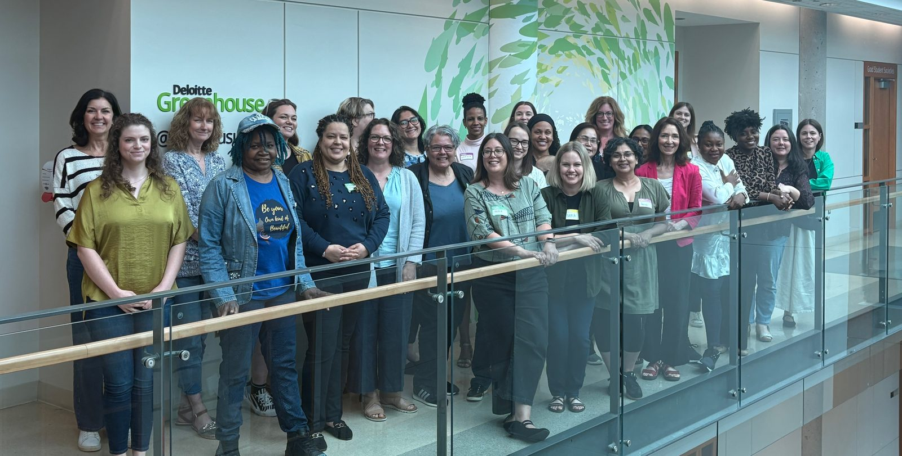

Early AI Adoption Lab
April 2025 — April 2026
148 participants across four cohorts
A national program supporting early stage women and non-binary entrepreneurs as they adopt AI into their businesses. Camp Tech designed and delivered the training in a variety of formats, and provided 1:1 mentorship. Entrepreneurs developed personalized 30-60-90 day roadmaps for their AI adoption.
The pilot ran across four cohorts:
- North Bay, Ontario: fully in-person, six weeks
- Halifax, Nova Scotia: fully in-person, five weeks
- Live Online: fully virtual, six weeks
- Whitehorse, Yukon: "new hybrid", five weeks
Partners & funders
Part of the AI Skills Lab Canada initiative, presented by The Forum, Camp Tech, and Growclass, with co-investment from DIGITAL, Canada's Global Innovation Cluster for digital technologies.